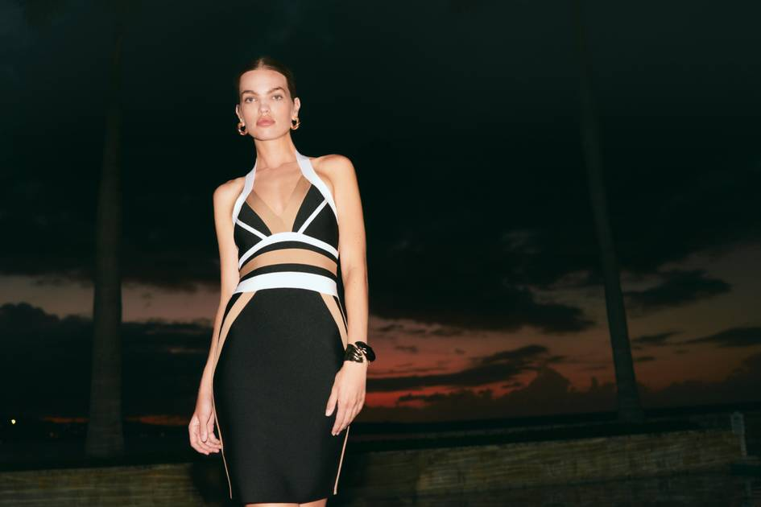

A · apparel/footwear/bag/accessory sideExpress
B · collaboratorbebe
| collab_id | Q12026-057 |
| series_name | Express x bebe Y2K Capsule |
| primary_brand | Express |
| partner_names | bebe |
| partner_type | fashion brand |
| category | occasionwear; dresses; jumpsuits; rompers |
| release_date | 2026-03-24 |
| announcement_date | 2026-03-24 |
| availability_region | United States; online |
| brand_region | United States |
| collection_size | |
| price_min | |
| price_max | |
| currency | USD |
| sales_channels | Express.com; select Express stores |
| official_url | https://fashionunited.com/news/fashion/express-teams-up-with-bebe-for-y2k-inspired-collection/2026032471369 |
| image_credit | Express / bebe |
| confidence_level | high |
| notes | Y2K going-out capsule launched 24 March online and in select stores. |
| last_checked | 2026-05-31 |